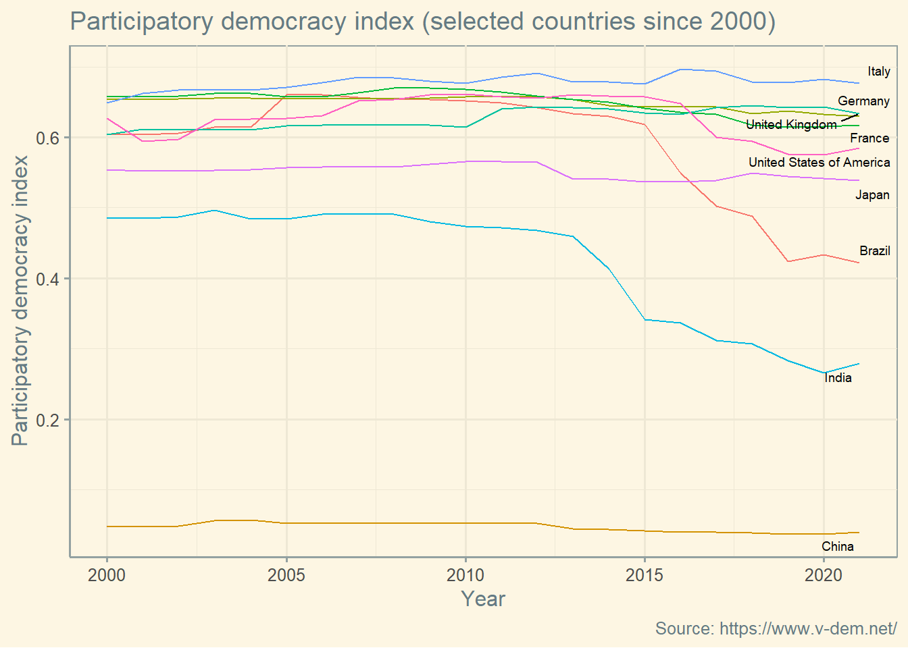
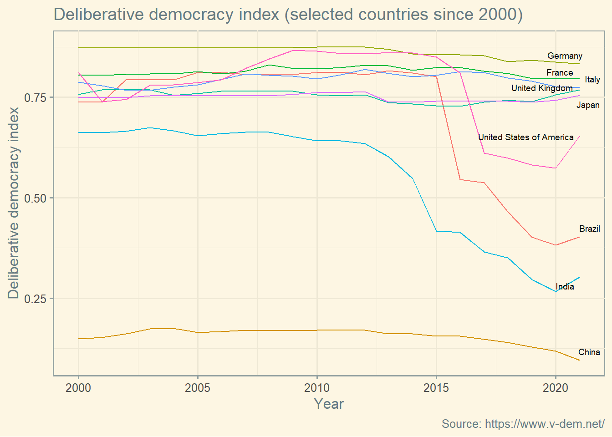
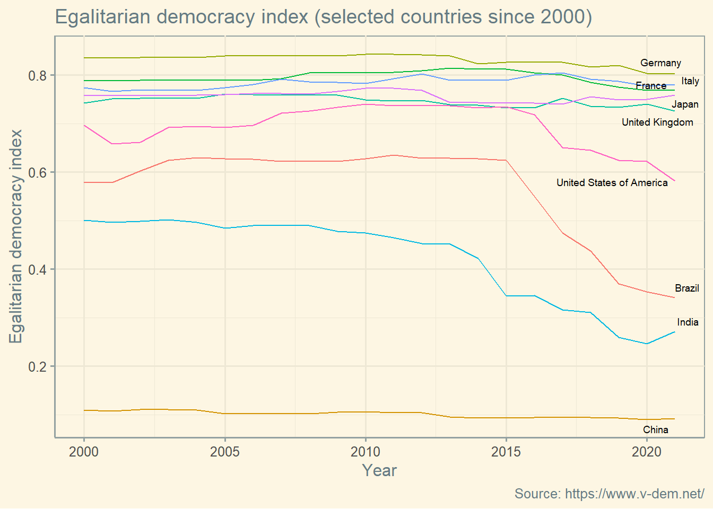

library(ggplot2)
library(ggthemes)
library(downloader)
url <- "https://v-dem.net/media/datasets/Country_Year_V-Dem_Core_R_v12.zip"
download(url, dest="dataset.zip", mode="wb")
unzip ("dataset.zip", exdir = "./")
data <- readRDS("Country_Year_V-Dem_Core_R_v12/V-Dem-CY-Core-v12.rds")
file.remove("dataset.zip")
file.remove("Country_Year_V-Dem_Core_R_v12/V-Dem-CY-Core-v12.rds")Index of Democracy
Open Data
Open Code
Brazil
Democracy
Graphing V-Dem
Let’s see how to create a graph of the levels of Democracy in Brazil. The data come from the V-Dem project, which is amazing.
First, download the data.
For convenience, let’s focus only on the years after 2000 and in some selected countries.
names(data)[names(data) == 'country_text_id'] <- 'Country'
data <-subset(data, year >= 2000)
countries <- as.data.frame(c("Brazil", "France", "Germany", "United States of America", "United Kingdom", "Italy", "Japan", "China", "India"))
colnames(countries) <- "country_name"
data <- merge(data, countries , by="country_name")Now let’s have fun visualizing data. More about the clarifications in : https://www.v-dem.net/static/website/img/refs/codebookv12.pdf
Electoral democracy index (D) (v2x_polyarchy)
Clarification: The electoral principle of democracy seeks to embody the core value of making rulers responsive to citizens, achieved through electoral competition for the electorate’s approval under circumstances when suffrage is extensive; political and civil society organizations can operate freely; elections are clean and not marred by fraud or systematic irregularities; and elections affect the composition of the chief executive of the country. In between elections, there is freedom of expression and an independent media capable of presenting alternative views on matters of political relevance. In the V-Dem conceptual scheme, electoral democracy is understood as an essential element of any other conception of representative democracy —liberal, participatory, deliberative, egalitarian, or some other.
ggplot(data, aes(x = year, y=v2x_polyarchy) ) + geom_line(aes(colour = Country)) +
labs(y='Electoral democracy index',
x='Year',
title = "Electoral democracy index (selected countries since 2000)",
caption = "Source: https://www.v-dem.net/") + theme_solarized() +
theme(legend.position = "none") +
ggrepel::geom_text_repel(data = data[which(data$year == 2021),], aes(label = country_name) , size = 2.5 , max.overlaps = Inf)Liberal democracy index (D) (v2x_libdem)
Clarification: The liberal principle of democracy emphasizes the importance of protecting individual and minority rights against the tyranny of the state and the tyranny of the majority. The liberal model takes a “negative” view of political power insofar as it judges the quality of democracy by the limits placed on government. This is achieved by constitutionally protected civil liberties, strong rule of law, an independent judiciary, and effective checks and balances that, together, limit the exercise of executive power. To make this a measure of liberal democracy, the index also takes the level of electoral democracy into account.
ggplot(data, aes(x = year, y=v2x_libdem) ) + geom_line(aes(group = Country, colour = Country)) +
labs(y='Liberal democracy index',
x='Year',
title = "Liberal democracy index (selected countries since 2000)",
caption = "Source: https://www.v-dem.net/") + theme_solarized()+
theme(legend.position = "none") +
ggrepel::geom_text_repel(data = data[which(data$year == 2021),], aes(label = country_name) , size = 2.5 , max.overlaps = Inf)Participatory democracy index (D) (v2x_partipdem)
Clarification: The participatory principle of democracy emphasizes active participation by citizens in all political processes, electoral and non-electoral. It is motivated by uneasiness about a bedrock practice of electoral democracy: delegating authority to representatives. Thus, direct rule by citizens is preferred, wherever practicable. This model of democracy thus takes suffrage for granted, emphasizing engagement in civil society organizations, direct democracy, and subnational elected bodies. To make it a measure of participatory democracy, the index also takes the level of electoral democracy into account.
ggplot(data, aes(x = year, y=v2x_partipdem) ) + geom_line(aes(group = Country, colour = Country)) +
labs(y='Participatory democracy index',
x='Year',
title = "Participatory democracy index (selected countries since 2000)",
caption = "Source: https://www.v-dem.net/") + theme_solarized()+
theme(legend.position = "none") +
ggrepel::geom_text_repel(data = data[which(data$year == 2021),], aes(label = country_name) , size = 2.5 , max.overlaps = Inf)
Deliberative democracy index (D) (v2x_delibdem)
Clarification: The deliberative principle of democracy focuses on the process by which decisions are reached in a polity. A deliberative process is one in which public reasoning focused on the common good motivates political decisions—as contrasted with emotional appeals, solidary attachments, parochial interests, or coercion. According to this principle, democracy requires more than an aggregation of existing preferences. There should also be respectful dialogue at all levels—from preference formation to final decision—among informed and competent participants who are open to persuasion. To make it a measure of not only the deliberative principle but also of democracy, the index also takes the level of electoral democracy into account.
ggplot(data, aes(x = year, y=v2x_delibdem) ) + geom_line(aes(group = Country, colour = Country)) +
labs(y='Deliberative democracy index',
x='Year',
title = "Deliberative democracy index (selected countries since 2000)",
caption = "Source: https://www.v-dem.net/") + theme_solarized()+
theme(legend.position = "none") +
ggrepel::geom_text_repel(data = data[which(data$year == 2021),], aes(label = country_name) , size = 2.5 , max.overlaps = Inf)
Egalitarian democracy index (D) (v2x_egaldem)
Clarification: The egalitarian principle of democracy holds that material and immaterial inequalities inhibit the exercise of formal rights and liberties, and diminish the ability of citizens from all social groups to participate. Egalitarian democracy is achieved when 1 rights and freedoms of individuals are protected equally across all social groups; and 2 resources are distributed equally across all social groups; 3 groups and individuals enjoy equal access to power. To make it a measure of egalitarian democracy, the index also takes the level of electoral democracy into account.
ggplot(data, aes(x = year, y=v2x_egaldem) ) + geom_line(aes(group = Country, colour = Country)) +
labs(y='Egalitarian democracy index',
x='Year',
title = "Egalitarian democracy index (selected countries since 2000)",
caption = "Source: https://www.v-dem.net/") + theme_solarized()+
theme(legend.position = "none") +
ggrepel::geom_text_repel(data = data[which(data$year == 2021),], aes(label = country_name) , size = 2.5 , max.overlaps = Inf)
Thanks for passing by!